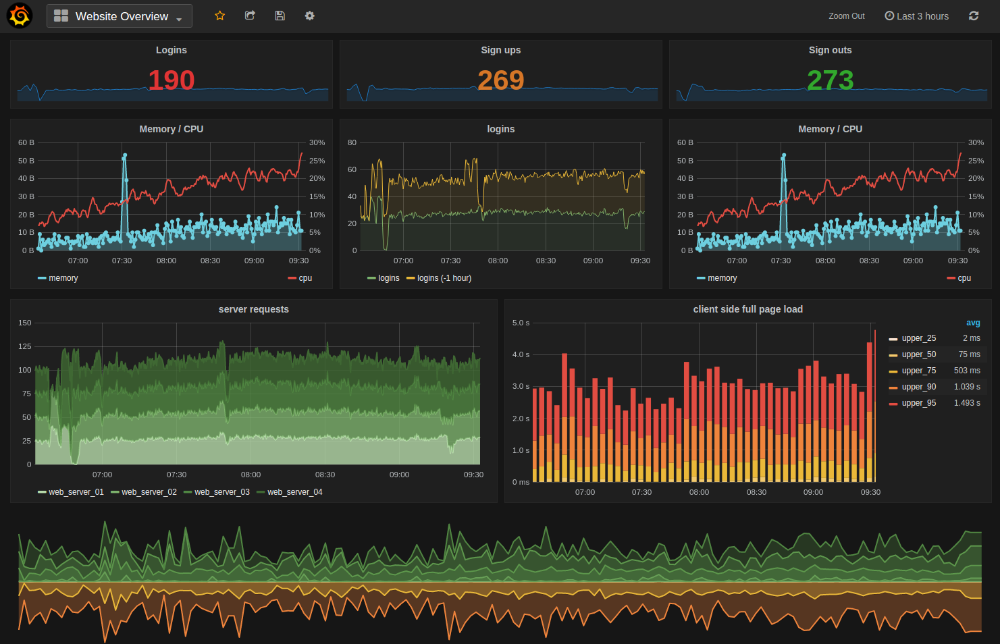

The Cybereason DevOps team were looking to build an easily accessible data metering and monitoring system so that they could quickly identify issues and mishaps within the tools they use, such as Jenkins and Kubernetes.
That's where we come in.

Grafana
Grafana is a multi-platform open source analytics and interactive visualization web application. It provides charts, graphs, and alerts for the web when connected to supported data sources. Grafana is divided into a front end and back end, written in TypeScript and Go, respectively. As a visualization tool, Grafana is a popular component in monitoring stacks, often used in combination with time series databases such as InfluxDB, Prometheus and Graphite; monitoring platforms such as Sensu, Icinga, Checkmk, Zabbix, Netdata, and PRTG; SIEMs such as Elasticsearch and Splunk; and other data sources. The Grafana user interface was originally based on version 3 of Kibana.
Prometheus
Prometheus is a free software application used for event monitoring and alerting. It records real-time metrics in a time series database (allowing for high dimensionality) built using a HTTP pull model, with flexible queries and real-time alerting. The project is written in Go and licensed under the Apache 2 License, with source code available on GitHub, and is a graduated project of the Cloud Native Computing Foundation, along with Kubernetes and Envoy.
Helm
Helm is a package manager that helps developers "easily manage and deploy applications onto the Kubernetes cluster." It joined the incubating level in June 2018 and graduated in April 2020.
Implementation
TL;DR: We used Prometheus to log data from Jenkins and Kubernetes and display it using Grafana.